Applications of Golden Ratio
Golden Ratio has many applications in real life where it can be seen in nature, used in design or in architecture, it can be observed in Solor System and many more. We will Describe Some of its applications here.
Golden Ratio In Nature
In Nature one can observe Golden Ratio and Fibonacci Sequence every where, whether it be a simple flower or even an complex human being.
Sunflower
Sunflowers are beautiful and have a great smell ever wonder the pattern of seeds of sunflowe. The pattern of seeds within a sunflower follows the Fibonacci sequence, or 1, 2, 3, 5, 8, 13, 21, 34, 55, 89, 144... In sunflowers, the spirals you see in the center are generated from this sequence -- there are two series of curves winding in opposite directions, starting at the center and stretching out to the petals, with each seed sitting at a certain angle from the neighboring seeds to create the spiral. It forms the curve so that every seed can get maximum exposure sun. See below the illustration of Sunflower.
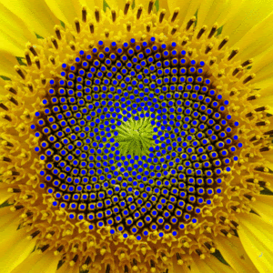
Plants
This interesting behavior is not just found in sunflower seeds. Leaves, branches and petals can grow in spirals, too. So that new leaves don't block the sun from older leaves, or so that the maximum amount of rain or dew gets directed down to the roots.
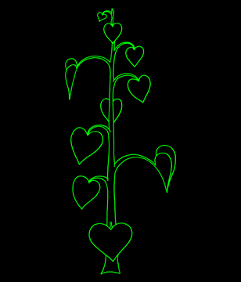
Flower Petals
This interesting Behavior is also seen in petals of flower.
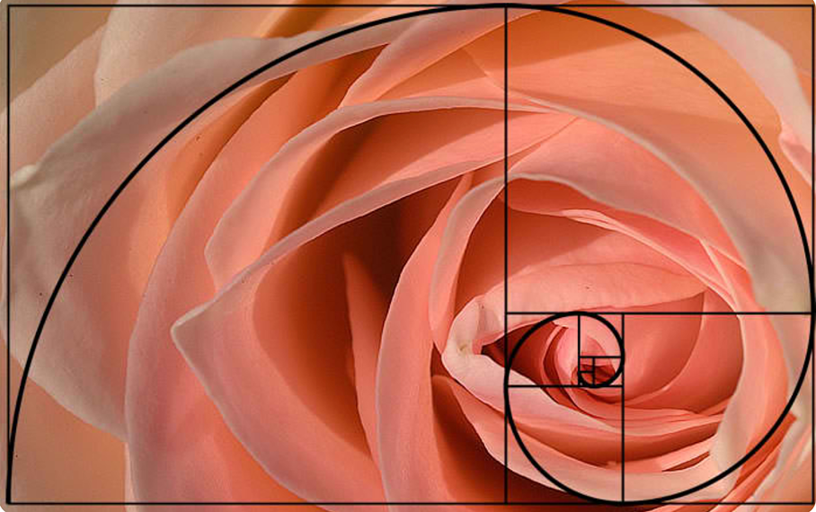
Hurricans
This similar behavior is found is Hurricans.
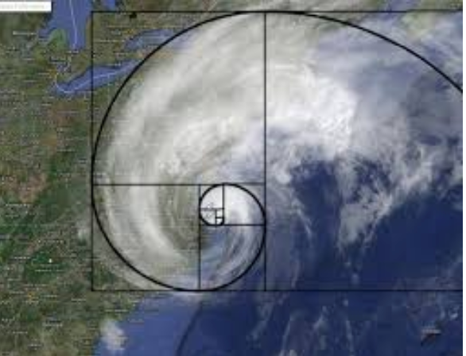
Golden Ratio in Design
Golden Ratio has been used extensively in any king of design work be it a website design or a painting or a logo design or etc..
Website Design
The Golden Ratio is used within graphic layouts of all kinds, especially to balance content that is text heavy. It can help designers create hierarchy and draw users’ eyes to specific areas by creating Golden Rectabgle.
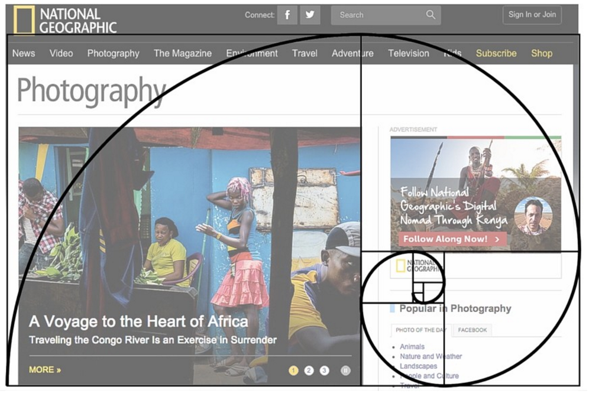
Logo Design
You can also use the golden ratio in branding. Even if the logo itself isn’t shaped like a golden rectangle or triangle, it can still employ elements that use golden proportions.
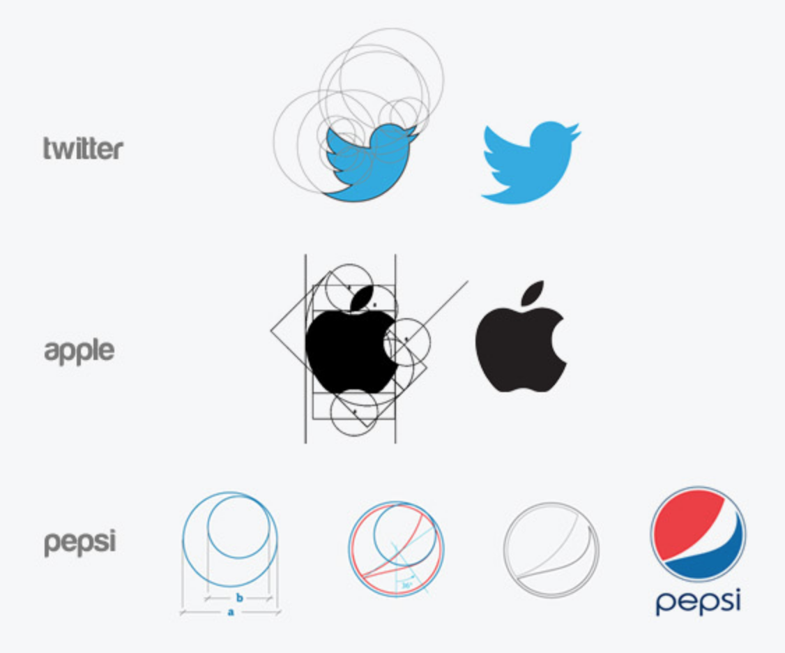
Typgraphy
If you want to use golden ratio, it is important to implement it in your typographical graphic design elements as well. For example, let’s say that you’re using 10pt font for the body text. Using the golden ratio, you can determine the best size for the headings by multiplying the body text number by 1.618. So, in our case it will be 10*1.618 = 16.18, which you can round down to 16pt font. The combination of 10 and 16 looks really nice and at the same time it is good for UX design as you can clearly see the headline, sometimes math does some work for you!
Painting
Golden Ratio has been used in paintings for mainting the compositions and many more. Let’s go back to da Vinci for a moment and see what this looks like in practice by having a look at Vitruvian Man through the lens of the Golden Spiral.
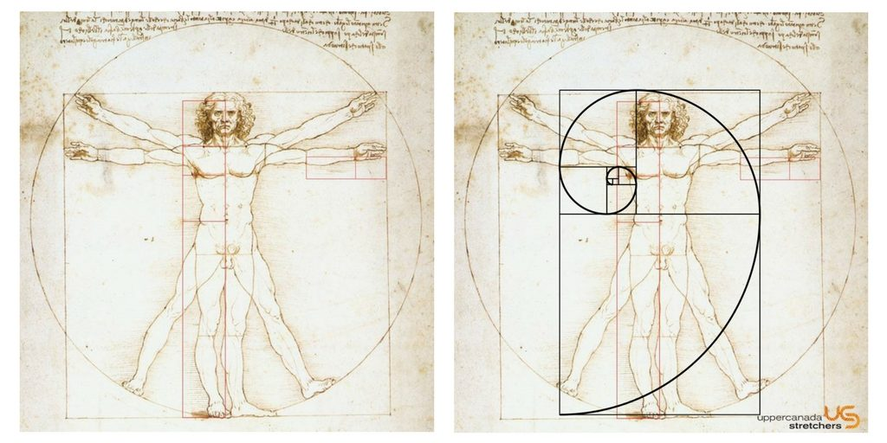
It was no accident that da Vinci’s works were so perfectly proportio Dutch painter Piet Mondrian, one of the pioneers of abstract art, was also known for applying the ratio in his works from 1918-1938.
Golden Ratio in Architectural Design
Ancient Greek architecture used the Golden Ratio to determine pleasing dimensional relationships between the width of a building and its height, the size of the portico and even the position of the columns supporting the structure. For instance, consider the Greek’s ancient Parthenon located in the Akropolis in Athens, Greece. The golden ratio appears in several constructions and layouts of the Parthenon.
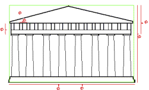
The Golden Ratio and Notre Dame
Phi and the use of the golden ratio are found in the design of Notre Dame in Paris, France. The Gothic Cathedral was built beginning in the year 1163, and completed in the year 1345. Claimed as the first Christian church in Paris, Notre Name was built upon the Roman temple of Jupiter. The west façade of the church was completed around the year 1200, and it is here where the presence of the use of the golden ratios is visible. See the image below with the highlighted segments emphasizing the ratio.
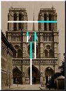
The Golden Ratio and the UN Building
When constructing the United Nations headquarters, the team of architects decided to use this ratio in a couple of different ways. When looking closely at the building we observe that many of the windows in fact have the golden ratio when comparing their width and height. The more obvious application of the United Nations headquarters to the golden ratio is found when looking at the width of the entire building and comparing it to the height of every ten floors.
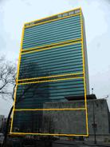
The Golden Ratio and the Great Pyramids
The most famous monuments of ancient Egypt are the Great Pyramids of Giza. Believed to have been constructed around 4,600 years ago, these pyramids were built around the golden ratio, long before the Greeks and the Parthenon. The largest of the pyramids in Giza contains the use of phi and the golden ratio. The golden ratio is represented as the ratio of the length/height of the triangular face to half the length of the square base.
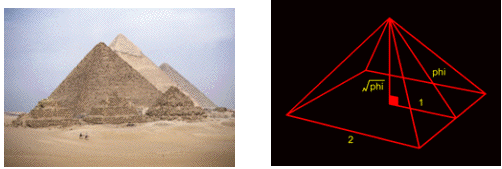
The Golden Ratio and Taj Mahal
It can observed that Taj Mahal architectures has used Golden Rotio to built such an epic hostorical construction.

Toronto’s CN Tower
The CN Tower in Toronto, the tallest tower and freestanding structure in the world, has contains the golden ratio in its design. The ratio of observation deck at 342 meters to the total height of 553.33 is 0.618 or phi, the reciprocal of Phi!
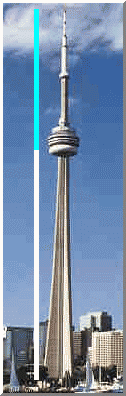
Golden Ratio in Music
The Fibonacci Sequence plays a big part in Western harmony and musical scales. Here are the facts:
– An octave on the piano consists of 13 notes. Eight are white keys and five are black keys.
– A scale is composed of eight notes, of which the third and fifth notes create the foundation of a basic chord
– In a scale, the dominant note is the fifth note, which is also the eighth note of all 13 notes that make up the octave.
– Eight divided by 13 equals 0.61538... the approximate Golden Ratio)
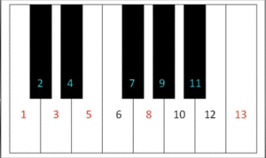